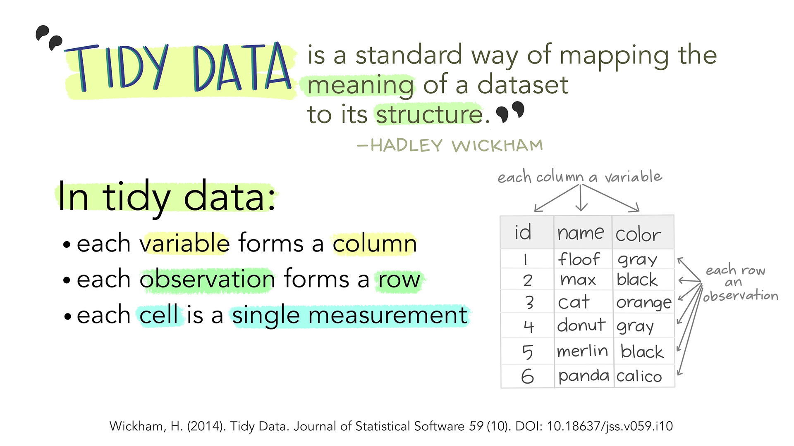

Cleaning & Wrangling
What is Tidy Data?
“Acknowledgements
Illustrations in Section 4.1 come from the Openscapes blog Tidy Data for reproducibility, efficiency, and collaboration by Julia Lowndes and Allison Horst.
Tidy Data is a standardized approach to structuring data tables that makes data management, analysis, and collaboration more efficient, scalable, and reproducible. When we apply Tidy Principles, we can transform messy or inconsistent data into a clean, consistent format that supports faster, more transparent, and more accurate analysis.
Tidy data follows “a standard way to organize data values within a dataset.” The core principles are:

It’s important to note that tidy principles are not tied to R or any specific programming language or software. Rather, they represent a universal approach to organizing data that enhances our ability to work with it effectively—regardless of the tools we use.
![On the left is a happy cute fuzzy monster holding a rectangular data frame with a tool that fits the data frame shape. On the workbench behind the monster are other data frames of similar rectangular shape, and neatly arranged tools that also look like they would fit those data frames. The workbench looks uncluttered and tidy. The text above the tidy workbench reads “When working with tidy data, we can use the same tools in similar ways for different datasets…” On the right is a cute monster looking very frustrated, using duct tape and other tools to haphazardly tie data tables together, each in a different way. The monster is in front of a messy, cluttered workbench. The text above the frustrated monster reads “...but working with untidy data often means reinventing the wheel with one-time approaches that are hard to iterate or reuse.”](images/tidy_data_3.jpg)
When you encounter a data table for the first time, ask yourself the following questions to determine whether it meets the criteria for tidy data:
- As I move down each column, do all the values represent the same variable?
- Think: An attribute that is being measured, counted, or described with data such as year, scooter company, duration or population.
- As I move across each row, do all the values belong to a single observation?
- Think: A single “data point” for which the measure, count or description of one or more variables is recorded. For example, if you are recording variables height, mass, and color of dragons, then each dragon is an observation.
- Does each cell contain only one value?
- Think: A single value of the recorded measure, count or description of the variable. We can’t have multiple values nor marginal sums in a cell.

Practice
Cleaning & Wrangling Example
Quick note on Base
R vs tidyverse
As you dive deeper into your R programming journey, you will see programmers utilizing Base R or the tidyverse as the framework for their code - or a mix of both!
- The
tidyverserefers to a collection of R packages designed for data science, offering a consistent and intuitive way to manipulate, explore, and visualize data, with packages likedplyr,ggplot2, andtidyr. - Base R refers to the built-in functions that come with the R programming language.
In this section, we will take messy data from the real world and programmatically wrangle it into a tidy data table using a handful of tidyverse packages.
Data we’re working with
Goal: Turn this messy data into tidy data!
This data comes from the U.S. Department of Transportation, Federal Highway Administration. The table compares automobile usage statistics across several countries for the year 1997 (some entries from 1990 and 1991).
R Packages we’ll be using for accessing, tidying, and visualizing the data:
# install packages using `install.packages("name_of_package")`
library(googlesheets4) # load data
library(skimr) # explore data
library(dplyr) # wrangle data
library(tidyr) # wrangle data
library(janitor) # `clean_names()`The data from U.S. DOT FHA has been recreated in a Google Sheet and can be accessed using the googlesheets4 package. Note: You will have to authenticate your Gmail account before using googlesheets4, you will see a prompt for authentication in the Console when you run the code below.
# "dat" = shorthand for "data"
link_raw_dat = "https://docs.google.com/spreadsheets/d/1QxmPVLol1Vmxq5f3PFPVr5SyDRFfcwkg6wc-gu0ISVc/edit?usp=sharing"
raw_dat <- googlesheets4::read_sheet(link_raw_dat)Before working with data, it’s always important to explore it first! Use the functions below to get familiar with the data. What information did you gain?
# run in the Console #
# prints out the first 5 rows of the data frame
head(raw_dat)
# provides a broad overview of a data frame
skimr::skim(raw_dat)
# opens data in a spreadsheet-style data viewer;
# the larger the data, the longer it will take to load
View(raw_dat)names() is a useful function that returns the column names of the data frame.
names(raw_dat)[1] "...1" "Japan" "France" "Germany" "Sweden" "U.K."
[7] "Canada 1/" "Mexico 2/" "U.S." The names of the columns are inconsistent and will be hard to work with in our data wrangling. Let’s fix that using the clean_names() function from the R package, janitor.
# cn = shorthand for "clean names"
cn_dat <- raw_dat %>%
janitor::clean_names()
Pipe ( %>% ) Operator
We just used the Pipe ( %>% ) Operator for the first time! The pipe is an operator that takes the output of one function and passes it into another function as an argument. It links together all the steps in data analysis making the code more efficient and readable.
Pipe Operator shortcut:
- Windows:
Ctrl+Shift+ M - Mac:
Command+Shift+ M
From View(), we can tell that our table isn’t tidy: each column should be a variable, and each row should be one observation, but that’s not the case here. In the first column (initially unnamed, but janitor::clean_names() provided it with the name x1), we see there are multiple variables. And each row contains data about multiple countries.
Reshape data from wide to long
We’ll need to reshape the data from wide to long and from long to wide to get it into the right structure.
Sketch it out
It can be helpful to draw out what the table should look like after each function and at the end of data wrangling.
We’re first going to reshape the data from wider to longer using tidyr::pivot_longer(). What do you expect the table to look like? What new variable names will we have?
# what happens when we run this code?
long_dat <- cn_dat %>%
tidyr::pivot_longer(
cols = -x1,
names_to = "country",
values_to = "value"
)
We got an Error!
Error in `tidyr::pivot_longer()`:
! Can't combine `japan` <double> and `canada_1` <list>.
Backtrace:
1. cn_dat %>% ...
3. tidyr:::pivot_longer.data.frame(., cols = -x1, names_to = "country", values_to = "value")It can be scary to when errors come up - but always read the error message! Google will be a helpful friend for deciphering, but over time you’ll gain instincts for understanding what the function needs to run properly.
This error is telling us that it’s trying to combine columns with incompatible data types, and it’s not allowed. When we use pivot_longer(), it tries to combine multiple columns into a single column under the hood, but it can’t merge a column of type double with a column of type list.
Check the data type of each column using class() and the subset operator ($) to confirm that the columns japan and canada_1 are different from each other.
class(cn_dat$japan)
class(cn_dat$canada_1)We can change a vector or column into a numeric data type using as.numeric(). What data type does canada_1 have now?
wrangle_dat <- cn_dat %>%
dplyr::mutate(canada_1 = as.numeric(canada_1))
class(wrangle_dat$canada_1)
We got a Warning!
Warning: There was 1 warning in `dplyr::mutate()`.
ℹ In argument: `canada_1 = as.numeric(canada_1)`.
Caused by warning:
! NAs introduced by coercionWarnings can be scary to see too, but they’re different from errors! A warning means the code successfully ran, but R is giving you a heads-up. That heads-up is saying: “Something might not have gone exactly as expected, and there may be unexpected or risky behavior in your result.”
In this case, the warning is telling us that R tried to convert some values to a different type, but some of those values couldn’t be converted, so R replaced them with NA (missing values).
Let’s look more closely at the structure of the column canada_1 to understand what’s going on.
# `str()` returns the structure of the object
# esp useful since `canada_1` is a list - shows what’s inside each element
str(cn_dat$canada_1)List of 5
$ : num 4.86
$ : num 0.444
$ : num 13887270
$ : num 31281092
$ : chr "N/A"Additional functions to use to inspect data
# best to run these in the Console; not your R Script
is.na(cn_dat$canada_1)
skimr::skim(cn_dat$canada_1)
summary(cn_dat$canada_1)
head(cn_dat$canada_1)
class(cn_dat$canada_1)
typeof(cn_dat$canada_1)
View(cn_dat)From str(), we can see that the last element in the list is of type chr, or character. Let’s see what happens when we run as.numeric() on just that value:
as.numeric("N/A")We receive the same warning, NAs introduced by coercion. That confirms this character value is likely the cause of the issue.
We can replace the character value with a true NA value using na_if() from the dplyr package.
wrangle_dat <- cn_dat %>%
dplyr::mutate(canada_1 = dplyr::na_if(x = canada_1, y = "N/A"))Looks like we’ve received another error…this is all part of the data tidying or wrangling process! What is this error trying to tell us?
We will need first simplify or flatten the list column into a regular vector using unlist().
# yay, no error!
wrangle_dat <- cn_dat %>%
dplyr::mutate(canada_1 = unlist(canada_1)) %>%
dplyr::mutate(canada_1 = dplyr::na_if(canada_1, "N/A"))Okay! Before we could reshape the data with tidyr::pivot_longer(), we had to do a few important data wrangling steps to get things into shape.
Below is what those steps look like chained together in a single pipe sequence. It’s so important to check the state of your data frame after each transformation, so don’t hesitate to View() or glimpse() between steps to make sure things are being wrangled the way you expect.
long_dat <- cn_dat %>%
# flatten list columns to atomic vector; check the class
mutate(canada_1 = unlist(canada_1)) %>%
mutate(mexico_2 = unlist(mexico_2)) %>%
# replace "N/A" strings with true `NA` values; check the class
mutate(canada_1 = na_if(canada_1, "N/A")) %>%
mutate(mexico_2 = na_if(mexico_2, "N/A")) %>%
# convert character values to numeric; check the class
mutate(canada_1 = as.numeric(canada_1),
mexico_2 = as.numeric(mexico_2)) %>%
# reshape from wide to long format
tidyr::pivot_longer(
cols = -x1,
names_to = "country",
values_to = "value"
) This piped sequence also works! We do receive a warning, but that’s okay as long as we understand what it means and how it affects our data.
In this case, the warning is telling us that some values couldn’t be converted to numeric and were turned into NAs. If we’re expecting that (e.g., we know there’s a “N/A” string or other non-numeric text), then the warning is just a helpful heads-up—not a blocker.
long_dat <- cn_dat %>%
# convert list cols to numeric (introduces NAs)
mutate(canada_1 = as.numeric(canada_1),
mexico_2 = as.numeric(mexico_2)) %>%
# reshape from wide to long format
tidyr::pivot_longer(
cols = -x1,
names_to = "country",
values_to = "value"
) Warning: There were 2 warnings in `mutate()`.
The first warning was:
ℹ In argument: `canada_1 = as.numeric(canada_1)`.
Caused by warning:
! NAs introduced by coercion
ℹ Run `dplyr::last_dplyr_warnings()` to see the 1 remaining warning.Reshape data from long to wide
The next step is to reshape the data to wide format by turning the unique values in the x1 column into their own columns, using the corresponding values to fill in the cells. This is useful when you want each unique value in x1 to become a separate variable in your dataset.
We’ll use tidyr::pivot_wider() for this:
wider_dat <- long_dat %>%
tidyr::pivot_wider(
names_from = x1,
values_from = value
)We’re getting closer to a tidy data frame! As we discussed earlier, including spaces in column names isn’t ideal and it can lead to messy code and hard-to-read syntax. To clean things up, we’ll use janitor::clean_names() once more to quickly format all our column names into lowercase snake_case.
wider_dat <- wider_dat %>%
janitor::clean_names()Wrangling strings and adding columns
We technically now have a tidy data frame (yay!) that meets the tidy data principles, where each column is a variable and each row is an observation.
However, there’s still a bit of data cleaning we can do to make any future visualizations or analyses go more smoothly and yield more accurate results.
Specifically, the country column contains inconsistent naming — some values are all lowercase, some include underscores, and some are oddly formatted.
Let’s clean this up by first standardizing the values with dplyr::case_when(), and then formatting them nicely using stringr::str_to_title():
tidy_dat <- wider_dat %>%
mutate(
country = dplyr::case_when(
country == "u_k" ~ "united kingdom",
country == "u_s" ~ "united states",
country == "canada_1" ~ "canada",
country == "mexico_2" ~ "mexico",
TRUE ~ country
)
) %>%
mutate(country = stringr::str_to_title(string = country))The final step in our wrangling process is to add a new column, year, to our data frame.
Why? Upon further investigation, we discovered that the odd formatting in the country column, specifically for Canada and Mexico, actually referred to footnotes in the original data source. These footnotes indicated that the values for these two countries don’t come from 1997 like the others. Instead:
- Canada’s data reflects the year 1990
- Mexico’s data reflects the year 1991
To ensure our dataset accurately represents these differences (and to avoid misleading interpretations in future analyses) we’ll add a year column to capture this context explicitly.
tidy_yearly_dat <- tidy_dat %>%
mutate(
year = case_when(country == "Canada" ~ 1990,
country == "Mexico" ~ 1991, TRUE ~ 1997),
.before = country
)Exporting Data
Yay, we have our new tidy data table! It’s ready for analysis and for sharing. To export a table created in R, we use the readr::write_*() family of functions. The readr package provides several options for saving data in different file formats.
In the code chunk below, we use write_csv() to save our tidy data table as a .csv file. This function takes two main arguments:
- the data object you want to save (in this case,
tidy_yearly_dat) - the file path where you want the file saved (we use
here::here()to create a robust and reproducible path across different systems).
Accessing the Help Page
You can view the documentation by running ?write_csv or ?readr::write_csv in the Console.
readr::write_csv(tidy_yearly_dat,
file = here::here("data", "tidy_yearly_dat.csv"))Bonus: Visualize the Tidy Data Frame
# new column names for table
tbl_col_names <- c(
"Year",
"Country",
"Total Auto VMT per Capita",
"Autos per Capita",
"# of Autos",
"Population",
"Auto VMT (thousands)"
)
# convert `year` to a factor so it's not treated as numeric in `format.args`
tbl_dat <- tidy_yearly_dat %>%
mutate(year = as.factor(year))
knitr::kable(tbl_dat,
col.names = tbl_col_names,
align = "c",
format.args = list(big.mark = ",")) %>%
kableExtra::kable_styling(full_width = F)| Year | Country | Total Auto VMT per Capita | Autos per Capita | # of Autos | Population | Auto VMT (thousands) |
|---|---|---|---|---|---|---|
| 1997 | Japan | 2.368 | 0.394 | 49,896,326 | 126,549,976 | 299,721,118 |
| 1997 | France | 4.209 | 0.463 | 27,480,000 | 59,329,691 | 249,689,411 |
| 1997 | Germany | 3.961 | 0.511 | 42,323,672 | 82,797,408 | 327,950,311 |
| 1997 | Sweden | 3.989 | 0.436 | 3,867,000 | 8,873,052 | 35,398,758 |
| 1997 | United Kingdom | 3.967 | 0.372 | 22,115,000 | 59,511,464 | 236,086,957 |
| 1990 | Canada | 4.859 | 0.444 | 13,887,270 | 31,281,092 | NA |
| 1991 | Mexico | 0.243 | 0.098 | 9,842,006 | 100,349,766 | NA |
| 1997 | United States | 5.701 | 0.481 | 132,432,044 | 275,562,673 | 1,570,973,292 |